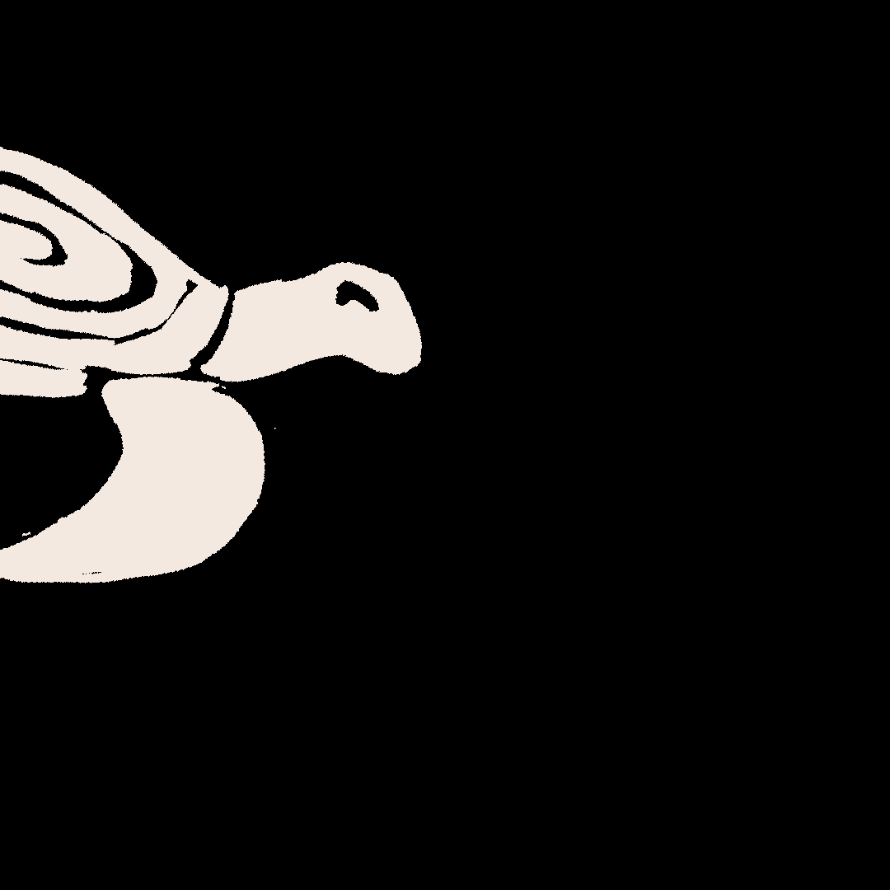
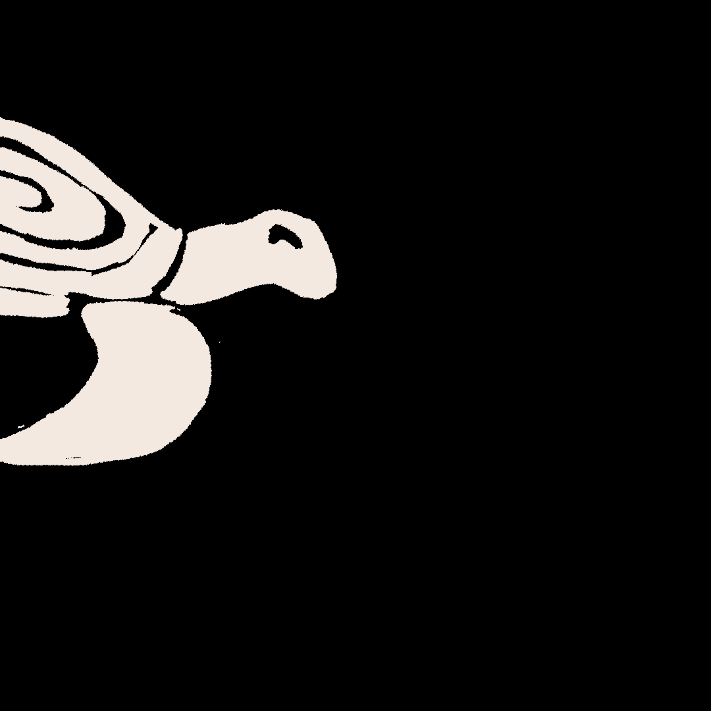

CIE 2: SUR LE DOS DE LA TORTUE
“Sur le dos de la tortue” (On the back of the turtle) is a children’s tale book from the series “Contes des origines de la terre” (Tales of the origin of the earth). It is an editorial design project made in collaboration with Théa Y, a classmate. For the images, I used linocut, which is a technique that allows the illustrations to convey an indigenous painting aspect.
TYPE:
TOOLS:
DATE:
OBJECT:
LOCATION:
Editorial
TOOLS:
Linocut, Layout, Animation
DATE:
01.14.22
OBJECT:
Book design, realized in collaboration with Théa Y., CFPA
LOCATION:
Geneva, Switzerland

 
